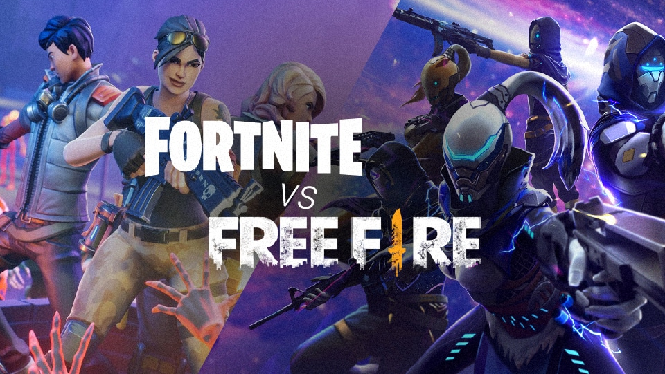

Fica bem claro que Fortnite é tecnicamente um jogo melhor que Free Fire, com melhores gráficos, maior
quantidade de jogadores, melhores
participações especiais e simplesmente uma experiência Battle Royale mais fiel e completa. Sem surpresas, o
game é provavelmente o Battle Royale mais
popular no mercado

Porque o Fortnite é ruim?
Cara, eu não sou grande fã de fps multiplayer, mas sou mente aberta e sei que se o bagulho tá no top games mais jogados é pq tem algo de bom.Fui na boa, curti até o lance das armas terem raridade, construir e tal. O problema é que não tem aquele *click*, o game é só isso mesmo, não me puxou nem um pouco. Minecraft pvp em 2012 me animou mais que isso.
Você aparece no ônibus, vê seus amigos, pula, tenta ficar junto, destrói coisas pra pegar materiais, pega armas, vai se juntando no meio do mapa, provavelmente morre.... sai da partida (nem tem pq ficar) e repete.Mesmo se você sobreviver é a mesma coisa.Nos mobas pelo menos esse lance de ir pra próxima partida tinha gosto por conta da profundidade de stats que estavam presentes, no fortnite o máximo que vai ter é uma camada fina de variedade de armas.